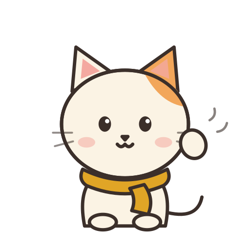

"Did you take your pills?" She says yes. I have no way to know.
53 million family members do this care work unpaid.
A small cat who keeps her company, sees what she shows it, and makes sure the right person knows.

The phone camera is a stand-in. The same companion moves into smart glasses.
github.com/mirandaplayer1/kinly